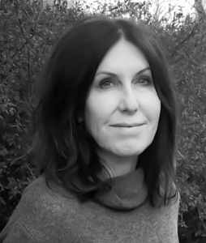
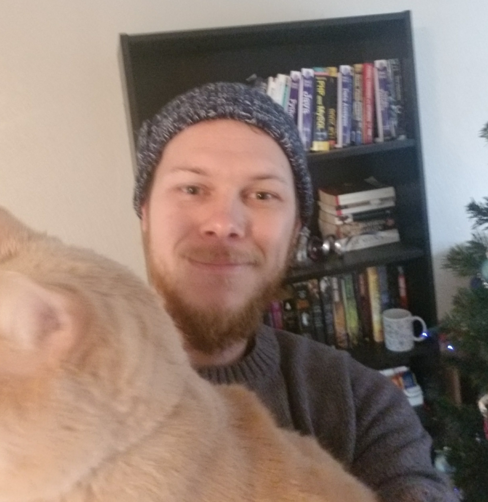
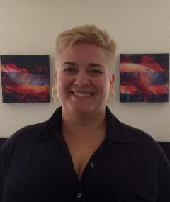
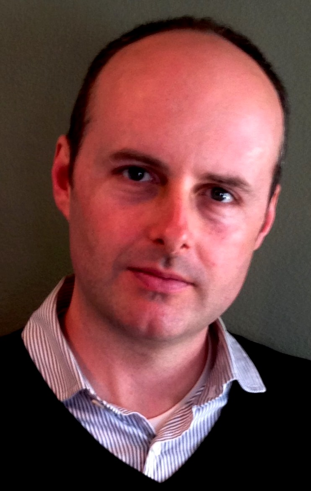

Organizers
Chelsea Gordon

Teenie Matlock
Timothy Shea
Ayme Tomson
Colin Holbrook
The goal of this interdiscplinary workshop is to discuss advances in research on mental simulation in philosophy, psychology, neuroscience and linguistics. Major themes will include definitions, mechanisms, and applications of simulation across these interdisciplinary fields.
Mental simulation, simply stated, concerns how human mental processes model external processes and states. This occurs continually in everyday cognition. For example, mentally rehearsing how to hit a baseball before actually hitting it or replaying the sound of fingernails on the blackboard. Mental simulation has become an important research topic in many fields, including philosophy, psychology, linguistics, neuroscience, computational science, and literature. Some aspects of simulation are heavily debated, including the extent to which mental simulation is grounded in or linked to physical action and perception, the mechanisms that drive it, and its utility in everyday life. Research on mental simulation has occurred primarily within, not across disciplines, even though interdisciplinary work would lead to deeper insights and advance theory in this area.
We are bringing together experts and interested researchers with very different approaches to studying mental simulation to generate shared understanding of topics related to mental simulation, as well as to motivate new directions for exploring the definitions, mechanisms, and applications of simulation.
We are committed to advancing the visibility and inclusion of women in cognitive science. Our invited speakers and participants will thus reflect the diverse contributions of women to the study of mental simulation.
The 2018 Mental Simulation Workshop will be held on Tuesday, October 2nd at the University of California, Merced campus.
The workshop will include invited talks from distinguished researchers in the field of mental simulation and extended working groups aimed at facilitating interdisciplinary collaborations.
Organizers intend to assemble a guest issue in an interdisciplinary scientific journal to disseminate new theoretical and applied views based on working group discussions. In addition, participants are encouraged to join in grant proposals and other inter-campus collaborations.
| Schedule | |
|---|---|
| Monday - Distinguished Cognitive Scientist Award | |
| 5:00 | Lawrence Barsalou's award talk |
| Tuesday - Simulation Workshop | |
| 9:00 | Coffee and Pastries |
| 9:10 | Welcome from the Organizers (Chelsea Gordon) |
| 9:30 | Introductory Words on Simulation (Teenie Matlock) |
| 10:00 | Invited Talk (Lawrence Barsalou on Situated Cognition) |
| 11:00 | Group Discussions |
| 12:00 | Lunch |
| 1:00 | Lightning talks |
| Lisa Libby, Ohio State University | |
| Tobias Gerstenberg, Stanford | |
| Martha Alibali, University of Wisonsin, Madison | |
| Sangeet Khemlani, Naval Research Laboratory | |
| David Vinson, Accenture Technology Labs | |
| 2:00 | Group Discussions |
| 3:00 | Coffee Break |
| 3:30 | Invited Talk (Mary Hegarty) |
| 4:30 | Final Words |
| 5:00 | Reception Dinner |
Invited talks will included extended Q&A.